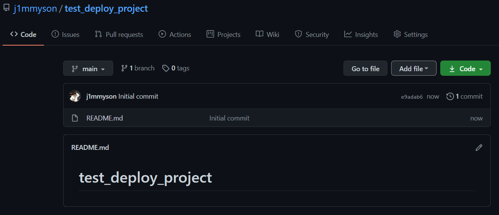
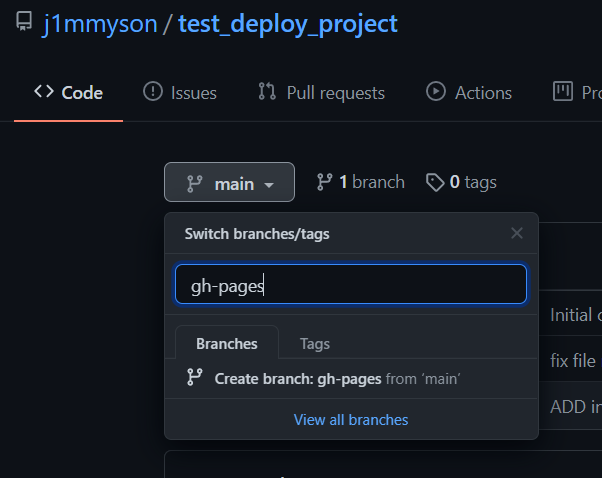
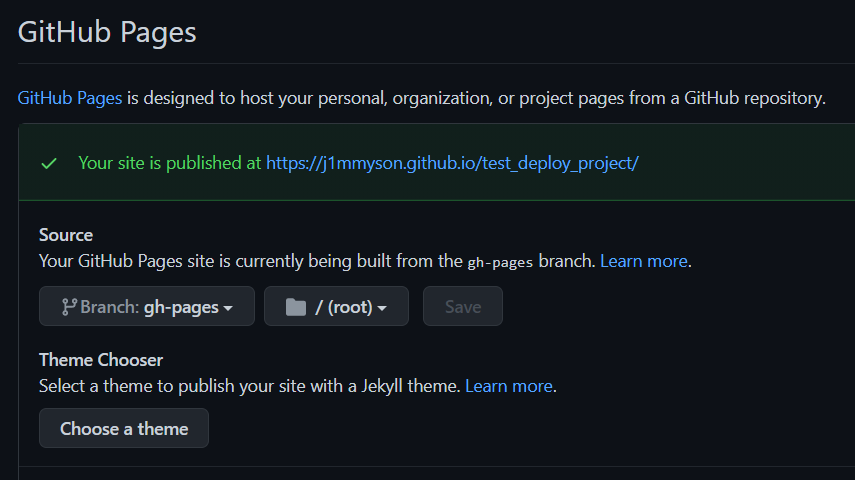
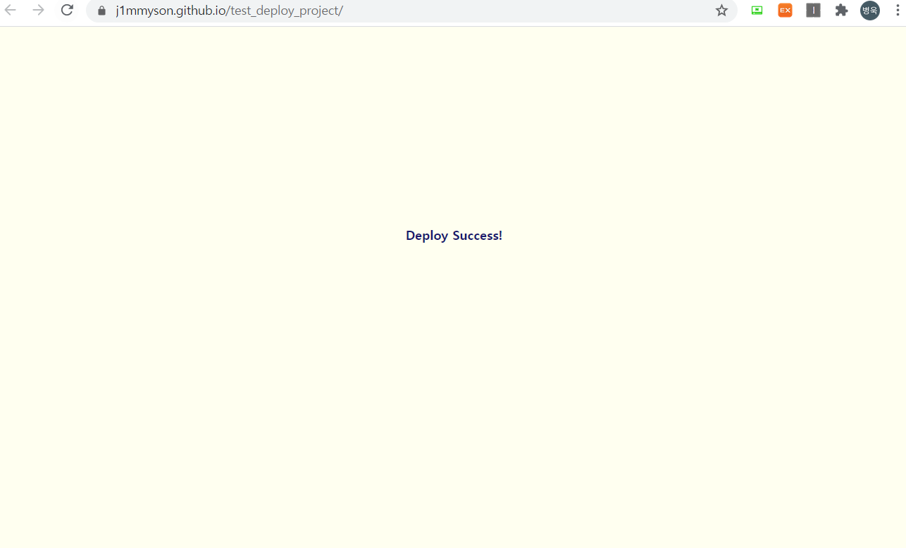

GitHub-Pages를 사용해 내 프로젝트를 배포해보자.
index.html을 갖는 웹프로젝트를 빠르고 간단하게 배포하는 방법을 정리해봄.
프로젝트를 Github-Pages로 배포하는 방법은 다음과 같다.
- 새 레포 생성
- Repo에 내 프로젝트 푸시
gh-pages브랜치 생성- 프로젝트 페이지
settings/GitHub Pages에서 배포 설정 user_name.github.io/RepoName에서 배포된 플젝 확인
새 Repo 생성
깃허브에서 새 레포를 만들어준다.

Repo에 내 프로젝트 푸시
$ git clone https://github.com/userName/RepoName.git$ cd RepoName$ touch index.html혹은 에디터 등으로 프로젝트파일 생성$ git add .&$ git commit -m "commit message"$ git push origin main
gh-pages 브랜치 생성
깃허브 페이지에서도 아래와 같이 간단하게 새 브랜치를 딸 수 있다.

Repo/settings
프로젝트 레포의 settings에 들어가 GitHub Pages를 확인해보자.
아마 gh-pages를 따게되면 자동으로 아래처럼 설정되어있을 것이다.
보면 Your site is published at ~~~ , 내 플젝이 해당 링크에 배포되었다는 메세지를 확인할 수 있다.

Deploy Success!
해당 링크에서 내 프로젝트가 잘 배포된 것을 확인할 수 있다.
